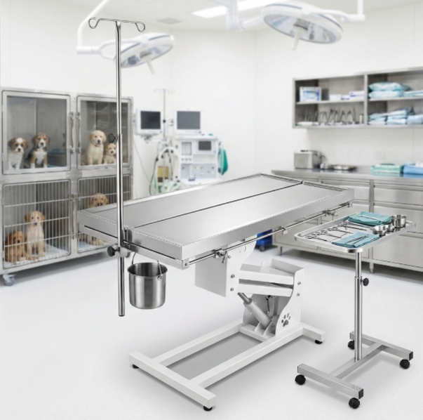

Mesas de Operación
Precisión quirúrgica en acero inoxidable para clínicas veterinarias
Diseño Clínico Profesional
Nuestras mesas de operación veterinaria están fabricadas en acero inoxidable AISI 304 con acabado satinado de bordes redondeados, eliminando esquinas que puedan acumular residuos o causar lesiones. La superficie perfectamente lisa permite una desinfección rápida y completa entre procedimientos.
El sistema de elevación hidráulico permite ajustar la altura de trabajo entre 75 cm y 105 cm con un pedal de pie, liberando las manos del veterinario durante el posicionamiento. La base en forma de T proporciona estabilidad máxima sin obstruir el acceso al paciente.
Incluyen canal perimetral de drenaje con desagüe central conectado a trampa de líquidos, ideal para cirugías y procedimientos donde se requiere manejo de fluidos. Superficie antideslizante con textura micro-granulada para seguridad del paciente.
Ficha Técnica
- Material: Acero Inoxidable AISI 304, calibre 18
- Superficie: 120 x 60 cm (estándar) / 140 x 60 cm (grande)
- Altura: Fija 85 cm o regulable 75-105 cm (hidráulica)
- Capacidad de carga: Hasta 150 kg
- Drenaje: Canal perimetral con desagüe central
- Acabado: Satinado con bordes redondeados de seguridad
- Base: Forma de T en tubo de acero inoxidable
- Accesorios opcionales: Barras de sujeción, soporte de suero, bandeja auxiliar
- Ruedas: 4 ruedas con freno (versión móvil)
- Normativa: Cumple estándares de higiene veterinaria
Galería del Producto

Mesa Quirúrgica Estándar